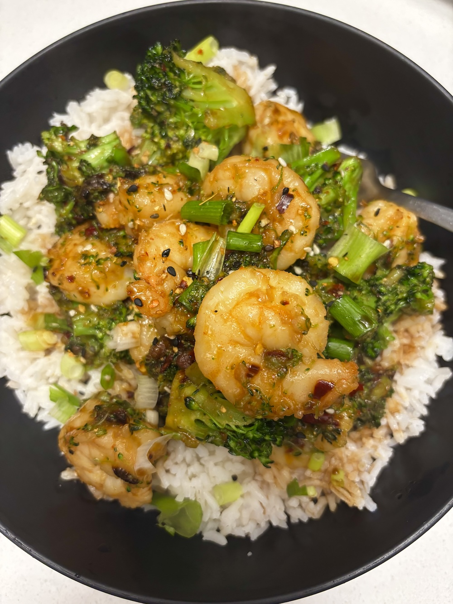
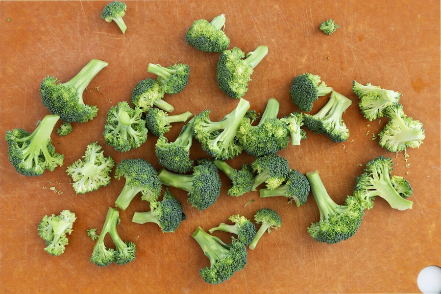

Shrimp & Broccoli
Prep: 15 min
Cook: 20 min
Serves: 2–3
Ingredients
- Shrimp
- Broccoli
- 1 tbsp Vegetable Oil
- 1 tbsp Sesame Oil
- Chopped/Shredded Garlic
- Oyster Sauce
- Chili Oil (optional)
- Scallions (optional)
- White Rice
- Seasonings (salt, pepper, ginger optional)
Preparation
Clean and devein the shrimp. Trim the broccoli ends and cut the crowns into bite-sized pieces.
Instructions
- Heat vegetable and sesame oil over medium-high heat. Stir in the garlic and cook until fragrant.
- Add in broccoli and sauté until three-quarters done.
- Add the seasoned shrimp and continue to sauté until cooked through.
- Stir in oyster sauce and optional chili oil; let it bubble to coat.
- Remove from heat and serve over white rice, garnished with scallions.
